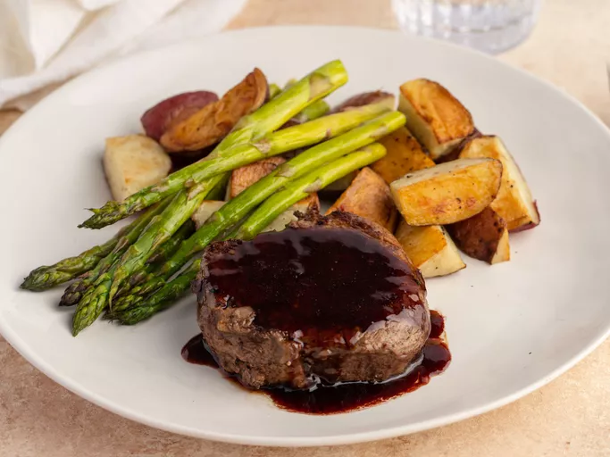

Filet Mignon with Rich Balsamic Glaze
Rating: 4.5 | 1054 Reviews | 82 photos
This is the best filet mignon recipe for an elegant dinner for two. Red wine and balsamic vinegar make a wonderfully rich sauce to serve with the steak. Delicious with steamed asparagus and baby red potatoes.
Ingredients
- 2 (4 ounce) filet mignon steaks
- ½ teaspoon ground black pepper, or to taste
- salt to taste
- ¼ cup balsamic vinegar
- ¼ cup dry red wine
Directions
- Gather ingredients.
- Sprinkle both sides of steaks with pepper and salt.
- Heat a nonstick skillet over medium-high heat. Sear steaks in the hot pan until browned, about 1 minute per side.
- Reduce heat to medium-low, and pour in balsamic vinegar and red wine. Cover and cook for 4 minutes. Flip steaks and baste with sauce; cover and cook for 4 minutes longer.
- Remove steaks to two warmed plates. Spoon a tablespoon of glaze over each steak and serve immediately.